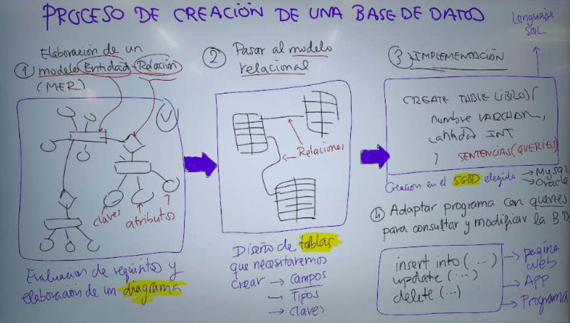
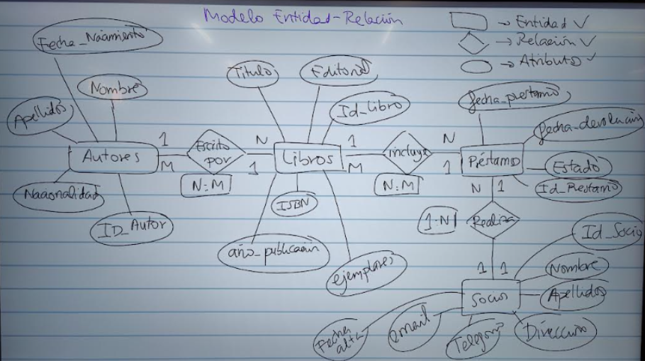
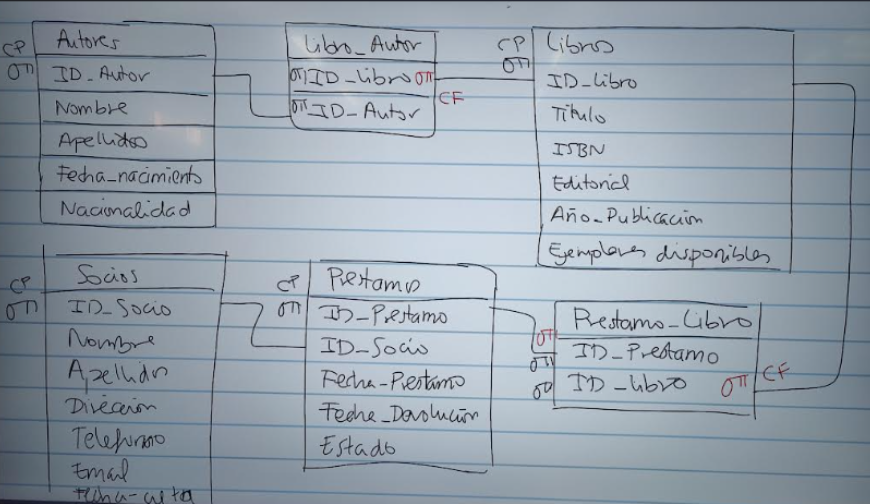
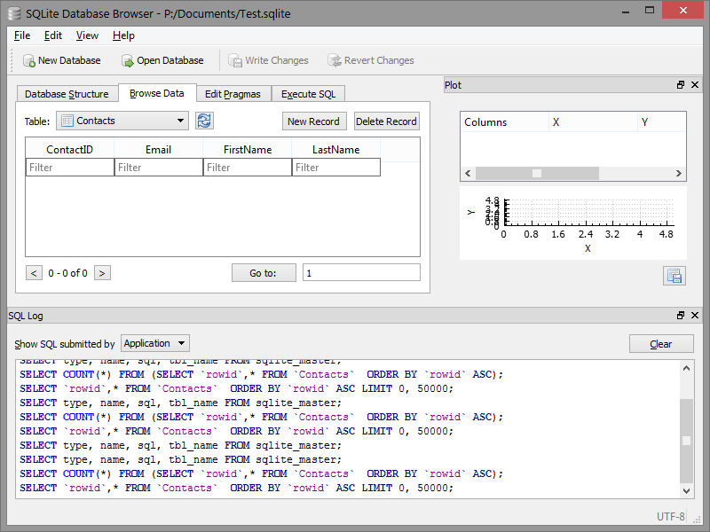
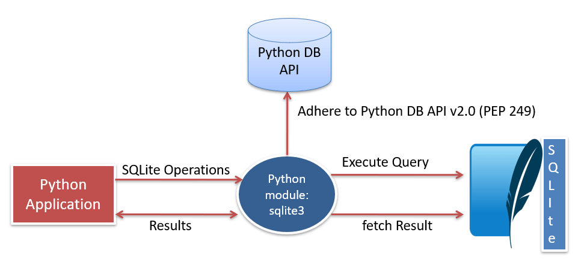
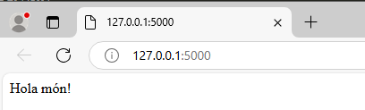
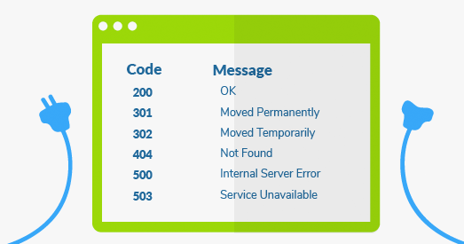
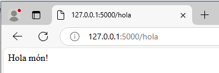
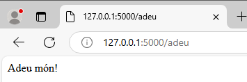

Bases de dades relacionals
Aquest document proporciona una guia detallada sobre el disseny i la manipulació de bases de dades relacionals, amb un enfocament pràctic en lús de SQL i Python. Comença explicant el procés general per dissenyar bases de dades, incloent-hi la creació d'un model entitat-relació i la seva transformació a un model relacional, ressaltant la importància de definir clarament els requisits i les entitats, les relacions i els atributs.
Després, aprofundeix en el llenguatge SQL, mostrant exemples de sentències per crear, inserir, modificar, eliminar i consultar dades a una base de dades. També explica com fer servir funcions SQL per realitzar operacions sobre dades i combinar dades de diferents taules utilitzant la sentència JOIN.
Finalment, s'introdueix la integració de bases de dades amb Python, utilitzant el mòdul sqlite3, i es donen exemples de com connectar, inserir, consultar i actualitzar registres. El document conclou amb una introducció a l'ús de Flask per crear una API que permeti accedir a les dades de la base de dades a través del web.
Programació i tractament de dades II
- Bases de dades relacionals
- Programació i tractament de dades II
- 1. Proceso general
- 2. Modelo Entidad-Relación
- Paso 1. Define claramente los requisitos
- Paso 2. Identifica las entidades
- Paso 3. Determina las relaciones
- Paso 4. Especifica los atributos
- 3. Modelo relacional
- SQlite i DB Browser
- 4. SQL
- 4.1 Sentencia CREATE
- 4.2 Sentencia INSERT
- 4.3 Sentencia ALTER
- 4.4 Sentencia DELETE
- 4.5 Sentencia UPDATE
- 4.5 Sentencia SELECT
- Funciones
- 4.6 Sentencia SELECT con JOIN
- 5. Python y SQL
- Python y sqlite3
- Proceso de conexión en Python
- Prueba insertar Libros
- Mostrar libros existentes
- Actualizar un registro
- Menú
- 6. API con Flask (No hacer)
- Objectiu de la pràctica
- ¿Qué es una API?
- ¿Qué es Flask?
1. Proceso general

2. Modelo Entidad-Relación
Crear un modelo entidad-relación (ER) es una parte fundamental del diseño de bases de datos, ya que te ayuda a estructurar y organizar la información de manera lógica. Aquí tienes algunos consejos clave para hacerlo bien:
Paso 1. Define claramente los requisitos
Antes de dibujar nada, comprende el propósito del sistema y recopila todos los requisitos funcionales. Habla con los usuarios finales o stakeholders para asegurarte de que entiendes qué datos necesitan manejar y cómo se relacionan.
Paso 2. Identifica las entidades
Piensa en las principales "cosas" de tu sistema que necesitas almacenar. Estas suelen ser sustantivos: por ejemplo, Cliente, Producto, Pedido. Evita incluir atributos o relaciones en esta etapa; concéntrate solo en identificar entidades.
Paso 3. Determina las relaciones
Identifica cómo interactúan las entidades entre sí. Ejemplo: un Cliente realiza un Pedido. Define la cardinalidad (uno a uno, uno a muchos, muchos a muchos).
- 1:1: Un empleado tiene un único número de seguridad social.
- 1:N: Un cliente puede hacer muchos pedidos.
- M:N: Muchos estudiantes pueden estar en muchos cursos.
Paso 4. Especifica los atributos
- Asocia cada atributo a la entidad o relación correspondiente. Ejemplo: para la entidad Cliente, puedes añadir atributos como Nombre, Teléfono, Email.
- Selecciona un identificador único o clave primaria para cada entidad.

3. Modelo relacional
Un cop tenim el model entitat-relació (E-R) definit, hem de transformar-lo en un model relacional, que es basa en taules amb els seus atributs i tipus de dades.
- Entitats → Taules
- Cada entitat es converteix en una taula amb els seus atributs com a columnes.
-
L’atribut clau primària (primary key) s’identifica clarament.
-
Relacions → Claus foranes
- Si dues entitats estan relacionades, s’afegeix una clau forana (foreign key) en la taula corresponent.
- Cardinalitat
- 1:1 → Es pot fusionar en una sola taula o fer una clau forana.
- 1:N → La clau forana va a la taula del costat N.
- N:M → Es crea una taula intermèdia amb dues claus foranes.
- Tipus de dades adequats
- Es defineixen els tipus de dades correctes per cada camp (VARCHAR, INTEGER, DATE, etc.).
Així doncs, les 4 entitats ens donaran 4 taules, i les dues relacions N:M, una taula cadascuna.

Así mismo, quedarán definidas dos tipos de claves:
- Las
claves primariasson campos en una tabla que identifican de forma única cada registro. No pueden ser nulas ni repetidas. - Las
claves foráneasson columnas en una tabla que establecen una relación con la clave primaria de otra tabla, asegurando la integridad referencial entre ellas.
SQlite i DB Browser
SQLite és un sistema de gestió de bases de dades relacional (RDBMS) lleuger, sense servidor i basat en fitxers. A diferència d'altres bases de dades com MySQL o PostgreSQL, SQLite no requereix un procés en segon pla per funcionar, ja que emmagatzema tota la informació en un únic fitxer.
DB Browser for SQLite és una eina gràfica de codi obert que permet gestionar bases de dades SQLite d'una manera intuïtiva i sense necessitat d'utilitzar línia de comandes. Amb aquest programa, es poden crear, obrir, modificar i administrar bases de dades SQLite d'una manera visual.

4. SQL
Así pues, las 4 entidades nos darán 4 tablas, y las dos relaciones N:M, otra tabla cada una.
Ejemplos de sentencias SQL:
CREATE TABLE usuarios (id INT PRIMARY KEY, nombre VARCHAR(50)); → Crea una tabla.
INSERT INTO usuarios (id, nombre) VALUES (1, 'Juan'); → Inserta un registro.
SELECT * FROM usuarios; → Consulta todos los datos de la tabla.
UPDATE usuarios SET nombre = 'Carlos' WHERE id = 1; → Modifica un registro.
DELETE FROM usuarios WHERE id = 1; → Elimina un registro.
Básicamente, una sentencia SQL es una orden que se le da a la base de datos para que haga algo.
4.1 Sentencia CREATE
El comando CREATE TABLE en SQL se utiliza para crear una nueva tabla en una base de datos. Especifica el nombre de la tabla y define las columnas que tendrá, junto con sus tipos de datos y restricciones.
El elemento básico son las sentencias o queries.
Sintaxis básica:
CREATE TABLE nombre_tabla (
columna1 tipo_dato restricciones,
columna2 tipo_dato restricciones,
...
);
Tipos de datos
En bases de dades, cada camp o columna d'una taula ha de tenir un tipus de dada definit que determina quin tipus de valors pot emmagatzemar. Els més comuns són:
VARCHAR(n): Per a cadenes de text de longitud variable, amb un màxim de n caràcters.INTEGER: Per a nombres enters.DECIMAL(p,s) o FLOAT: Per a nombres decimals.DATE: Per a dates (any, mes i dia).TIMESTAMP: Per a data i hora.BOOLEAN: Per a valors lògics (true/false).
Tablas Libros
CREATE TABLE Libros (
ID_Libro INTEGER PRIMARY KEY AUTOINCREMENT, -- Identificador único, autoincremental
Titulo VARCHAR(255), -- Título del libro (máx. 255 caracteres)
ISBN VARCHAR(13), -- Código ISBN del libro (máx. 13 caracteres)
Editorial VARCHAR(100), -- Nombre de la editorial (máx. 100 caracteres)
Año_Publicación INT, -- Año en que se publicó el libro
Ejemplares_Disponibles INT -- Cantidad de ejemplares disponibles
);
Tabla Autores
CREATE TABLE Autores (
ID_Autor INTEGER PRIMARY KEY AUTOINCREMENT,
Nombre VARCHAR(100),
Apellidos VARCHAR(100),
Fecha_Nacimiento DATE,
Nacionalidad VARCHAR(100)
);
Tabla Libro_Autor
CREATE TABLE Libro_Autor (
ID_Libro INTEGER,
ID_Autor INTEGER,
PRIMARY KEY (ID_Libro, ID_Autor),
FOREIGN KEY (ID_Libro) REFERENCES Libros(ID_Libro),
FOREIGN KEY (ID_Autor) REFERENCES Autores(ID_Autor)
);
Los campos ID_Libro e ID_Autor conforman la clave primaria.
ID_Libro y ID_Autor son claves foráneas de los respectivos campos de las tablas Libros y Autores.
CREATE TABLE Socios (
ID_Socio INTEGER PRIMARY KEY AUTOINCREMENT,
Nombre VARCHAR(100),
Apellidos VARCHAR(100),
Dirección VARCHAR(255),
Teléfono VARCHAR(15),
Email VARCHAR(100),
Fecha_Alta DATE
);
CREATE TABLE Prestamos (
ID_Prestamo INTEGER PRIMARY KEY AUTOINCREMENT,
ID_Socio INT,
Fecha_Prestamo DATE,
Fecha_Devolución DATE,
Estado VARCHAR(20),
FOREIGN KEY (ID_Socio) REFERENCES Socios(ID_Socio)
);
CREATE TABLE Prestamo_Libro (
ID_Prestamo INT,
ID_Libro INT,
Cantidad INT,
PRIMARY KEY (ID_Prestamo, ID_Libro),
FOREIGN KEY (ID_Prestamo) REFERENCES Prestamos(ID_Prestamo),
FOREIGN KEY (ID_Libro) REFERENCES Libros(ID_Libro)
);
4.2 Sentencia INSERT
El comando INSERT en SQL se utiliza para agregar nuevas filas (registros) a una tabla en una base de datos. Cuando usas INSERT, estás diciendo a la base de datos que agregue nuevos datos a la tabla que has especificado.
Sintaxis básica:
Puedes insertar varias filas al mismo tiempo en una única consulta utilizando el comando INSERT INTO. Esto mejora el rendimiento al evitar múltiples consultas individuales.
Utilizamos insert para crear nuevos registros en las tablas Libros y Autores.
INSERT INTO Libros (Titulo, ISBN, Editorial, Año_Publicación, Ejemplares_Disponibles) VALUES
('Dune', '978-0441013593', 'Chilton Books', 1965, 5),
('El Hobbit', '978-0618968633', 'Allen & Unwin', 1937, 3),
INSERT INTO Autores (Nombre, Apellidos, Fecha_Nacimiento, Fecha_Fallecimiento, Nacionalidad) VALUES
( 'Frank', 'Herbert', '1920-10-08', '1986-02-11', 'Estadounidense'),
( 'J.R.R.', 'Tolkien', '1892-01-03', '1973-09-02', 'Británico')
Deberemos introducir el Libro y el Autor antes de rellenar la tabla Libro_Autor.
Tabla Libros
Aquests són els registres que haurà d contenir la nostra taula Libros. Recordau que ID_Libro es crearà tot sol degut a que l'hem definit amb la restricció AUTOINCREMENT.
| ID_Libro | Título | ISBN | Editorial | Año_Publicacion | Ejemplares_Disponibles |
|---|---|---|---|---|---|
| 1 | Dune | 9780441013593 | Chilton Books | 1965 | 5 |
| 2 | El Hobbit | 9780618968633 | Allen & Unwin | 1937 | 3 |
| 3 | Fundación | 9780553293357 | Gnome Press | 1951 | 7 |
| 4 | Canción de Hielo y Fuego | 9780553103540 | Bantam Books | 1996 | 4 |
| 5 | El Juego de Ender | 9780812550702 | Tor Books | 1985 | 6 |
| 6 | El Señor de los Anillos: La Comunidad del Anillo | 9780261103573 | George Allen & Unwin | 1954 | 5 |
| 7 | 1984 | 9780451524935 | Secker & Warburg | 1949 | 5 |
| 8 | Fahrenheit 451 | 9781451673319 | Ballantine Books | 1953 | 5 |
| 9 | El Mesías de Dune | 9780441172719 | Chilton Books | 1969 | 7 |
| 10 | Tormenta de Espadas | 9780553106633 | Bantam Books | 2000 | 4 |
Tabla Autores
| ID_Autor | Nombre | Apellidos | Fecha_Nacimiento | Fecha_Fallecimiento | Nacionalidad |
|---|---|---|---|---|---|
| 1 | Frank | Herbert | 1920-10-08 | 1986-02-11 | Estadounidense |
| 2 | J.R.R. | Tolkien | 1892-01-03 | 1973-09-02 | Británica |
| 3 | Isaac | Asimov | 1920-01-02 | 1992-04-06 | Estadounidense |
| 4 | George R.R. | Martin | 1948-09-20 | - | Estadounidense |
| 5 | Orson | Scott Card | 1951-08-24 | - | Estadounidense |
| 6 | George | Orwell | 1903-06-25 | 1950-01-21 | Británica |
| 7 | Ray | Bradbury | 1920-08-22 | 2012-06-05 | Estadounidense |
Tabla Libro_Autor
| ID_Libro | ID_Autor |
|---|---|
| 1 | 1 |
| 2 | 2 |
| 3 | 3 |
| 4 | 4 |
| 5 | 5 |
| 6 | 2 |
| 7 | 6 |
| 8 | 7 |
| 9 | 1 |
| 10 | 4 |
4.3 Sentencia ALTER
El comando ALTER en SQL se utiliza para modificar la estructura de una tabla existente en una base de datos. Es decir, permite agregar, eliminar o modificar columnas, cambiar el tipo de datos de las columnas, renombrar tablas, entre otros
Agregar un columna
Modificar el tipo de dato de una columna existente: Eliminar una columna de una tabla: Agregar una restricción de clave primaria:4.4 Sentencia DELETE
El DELETE en SQL és una instrucció que s'utilitza per eliminar files d'una taula en una base de dades.
[!CAUTION] Aquesta operació és irreversible, és a dir, un cop eliminada la fila, no es pot recuperar, excepte si es té una còpia de seguretat de la base de dades.
4.5 Sentencia UPDATE
UPDATE en SQL és una instrucció que s'utilitza per modificar els valors de les files existents en una taula. Aquesta operació permet actualitzar dades específiques basant-se en una condició
Actualizar un campo de todos los registros.
Permite actualizar datos de ciertos regitrosAumentar salario un 10% a ciertos trabajadores
4.5 Sentencia SELECT
Permite recuperar registros de 1 o más tablas.
1) Select simple: (Devuelve todos los campos de todos los registros)
2) Select campos: (Devuelve ciertos campos de todos los registros)
Cláusula WHERE
La cláusula WHERE nos permitirá seleccionr solo aquellos registros cuyos campos cunmplan con las condiciones especificadas a continuación.
Cláusula LIKE
1) Select con operador LIKE:
Operadores lógicos (AND, OR)
Los operadores lógicos en SQL se utilizan para combinar o modificar condiciones en una consulta, lo que permite realizar filtrados más complejos en las bases de datos. Estos operadores son fundamentales cuando se quiere hacer consultas que dependan de múltiples condiciones.
El operador AND se usa para combinar dos o más condiciones en una consulta. Devuelve true solo si todas las condiciones son verdaderas. 6 o más ejemplares y publicados a partir de 1951 (incluído)
SELECT Titulo, Ejemplares_Disponibles, Año_Publicacion
FROM Libros
WHERE Ejemplares_Disponibles > 5 AND Año_Publicacion > 1950;
Operador OR
El operador OR se usa para combinar dos o más condiciones. Devuelve true si al menos una de las condiciones es verdadera.
Sintaxis:
Operador LIKE
El operador LIKE se utiliza para buscar un patrón dentro de una columna, especialmente con cadenas de texto. Usa los caracteres especiales % (cualquier secuencia de caracteres) y _ (un solo carácter).
Título que comienza por D o con 7 o más ejemplares disponibles.
SELECT Titulo, Ejemplares_Disponibles
FROM Libros
WHERE Titulo LIKE 'D%' OR Ejemplares_Disponibles > 6;
7) Select con ORDER BY (ASC por defecto, DESC opcional)
8) Select con LIMIT
9) Select con COUNT
Funciones
Las funciones permiten hacer operaciones sobre ciertos campos
Función SUM()
La consulta SQL suma tots els valors de la columna Ejemplares_Disponibles de la taula Libros i mostra el resultat total amb el nom d'Total_libros.Per exemple, si la taula Libros té tres llibres amb 3, 5 i 2 exemplars disponibles, el resultat de la consulta serà:
Función COUNT()
Així, la consulta retorna el nombre total de títols disponibles (llibres diferents)
Podemos combinar las funciones en una sola consulta. Així, la consulta retorna el nombre total d'exemplars disponibles de tots els llibres combinats.
Resum:
Aquesta consulta retorna dues coses:
Total_titulos: El nombre total de títols (llibres) que hi ha a la taulaLibros. S'obté mitjançant la funcióCOUNT(*).Total_libros: El nombre total d'exemplars disponibles de tots els llibres combinats. Es calcula amb la funcióSUM(Ejemplares_Disponibles).
Exemple:
Imagina que tens la següent taula Libros:
| Título | Ejemplares_Disponibles |
|---|---|
| Llibre A | 3 |
| Llibre B | 5 |
| Llibre C | 2 |
El resultat de la consulta serà:
| Total_titulos | Total_libros |
|---|---|
| 3 | 10 |
4.6 Sentencia SELECT con JOIN
Un JOIN en SQL és una operació que permet combinar dades de dues o més taules en una consulta, basant-se en una columna comuna entre elles. Això és útil quan les dades estan distribuïdes en diverses taules relacionades, i vols obtenir informació combinada.
Paso 1. Selección de tablas
Al querer información de libros con sus autores, por fuerza debremos hacer referencia a las tres tablas, incluída Libro_autor, pues es la que relaciona a las otras dos.
Paso2. Seleccionar campos
Seleccionamos únicamente los campos que nos interesan.
SELECT L.ID_Libro, L.Titulo, LA.ID_Libro, LA.ID_Autor, A.ID_Autor, A.Nombre
FROM Libros L
JOIN Libro_Autor
JOIN Autores A
Paso 2. Filrado (ON)
Ahora impondremos con las clausulas ON las condiciones para filtrar únicamente las filas que cumplan las condiciones.
SELECT L.ID_Libro, L.Titulo, LA.ID_Libro, LA.ID_Autor, A.ID_Autor, A.Nombre
FROM Libros L
JOIN Libro_Autor LA ON L.ID_Libro = LA.ID_libro
JOIN Autores A ON LA.ID_Autor = A.ID_Autor
Paso 4. Select con campos y Orden
Finalmente seleccionamos solo los campos que queremos mostrar, y ordenamos por título en orden alfabético ascendente.
SELECT L.Titulo, A.Nombre, A.Apellidos
FROM Libros L
JOIN Libro_Autor LA ON L.ID_Libro = LA.ID_Libro
JOIN Autores A ON LA.ID_Autor = A.ID_Autor
ORDER BY L.Titulo;
5. Python y SQL
A pesar de que es habitual utilizar un SGDB para crear la estructura de la base de datos y solucionar problemas puntuales, los usuarios generalmente no acceden a la base de datos directamente, sino a través de una página web, programa o app que internamente se conecta a ella, y hace de intermediaria entre el usuario y la base de datos.
Python y sqlite3
La forma de acceder dependerá del lenguaje de programación con el que hayamos construido esta web o programa (en nuestro caso Python), y el tipo de base de datos utilizado (en nuestro caso, sqlite).
En el caso de Python, existe un módulo o librería llamada sqlite3 que nos proporciona una serie de estructuras y funciones ya creadas para conectar con una base de datos y enviarle consultas.

Proceso de conexión en Python
De forma simplificada, los pasos son los siguientes
- Conectar o crear el archivo de base de datos:
conexion = sqlite3.connect("nombre_del_archivo.db") - Crear un cursor para hacer las consultas:
cursor = conexion.cursor() - Ejecutar la consulta:
cursor.execute() - Guardar cambios:
conexion.commit()5: Cerrar la conexión:conexion.close()
Prueba insertar Libros
En este ejemplo veremos como insertar un registro en la tabla Libros.
import sqlite3
# Abre (o crea si no existe) una base de datos SQLite llamada biblioteca.db.
# Devuelve un objeto de conexión que se usa para interactuar con la base de datos.
# Si la base de datos ya existe, simplemente la abre.
conexion = sqlite3.connect("biblioteca.db")
# Crea un cursor, que es un objeto que permite ejecutar sentencias SQL en la base de datos.
# Permite ejecutar consultas con cursor.execute(sql, parametros).
#Recupera los resultados de consultas SELECT con cursor.fetchall() o cursor.fetchone().
# Facilita la inserción, actualización y eliminación de datos.
cursor = conexion.cursor()
nombre = input("Titulo")
ISBN = input("ISBN")
editorial = input("Editorial")
año = input("año publicacion")
ejemplares_disponibles = int(input("ejemplares"))
sql = "INSERT INTO Libros (Titulo, ISBN, Editorial, Año_publicación, Ejemplares_disponibles) VALUES (?,?,?,?,?)"
cursor.execute(sql, (nombre, ISBN, editorial, año, ejemplares_disponibles))
# COMMIT guarda los cambios realizados en la base de datos de manera permanente.
# Se usa después de operaciones que modifican la base de datos, como INSERT, UPDATE o DELETE.
# SQLite (y otras bases de datos) trabajan con transacciones, lo que significa que los cambios no se aplican hasta que se confirman con commit().
conexion.commit()
# Cierra la conexión con la base de datos.
# Se recomienda usarlo siempre que termines de trabajar con la base de datos.
# Evita que el programa siga consumiendo memoria y recursos innecesariamente.
# Reduce el riesgo de corrupción de datos al asegurarse de que la conexión se cierra correctamente.
# Si intentas ejecutar más consultas después de cerrar la conexión, obtendrás un error.
conexion.close()
print("El libro se ha insertado correctamente")
Mostrar libros existentes
En este caso veremos como ejecutar un select. En este caso, la consulta nos devolverá los resultados de la consulta, que guardaremos en una variable libros. Con fetchall() recuperaremos todos los registros, y con un for los recorreremos uno a uno para mostrar los diferentes campos.
Los datos devueltos tienen este formato, que deberemos procesar con el for para recorrer los 3 libros uno a uno y mostrar la información
{'ID': 1, 'Titulo': 'El Quijote', 'ISBN': '978-3-16-148410-0', 'Editorial': 'Editorial X', 'Año_publicación': 1605, 'Ejemplares_disponibles': 5}
{'ID': 2, 'Titulo': '1984', 'ISBN': '978-0-452-28423-4', 'Editorial': 'Editorial Y', 'Año_publicación': 1949, 'Ejemplares_disponibles': 3}
{'ID': 3, 'Titulo': 'Cien años de soledad', 'ISBN': '978-0-06-088328-7', 'Editorial': 'Editorial Z', 'Año_publicación': 1967, 'Ejemplares_disponibles': 7}
Para el primer libro:
- libro['Titulo'] me devolverá 'El Quijote'.
- linto ['Año_publicación] me devolverá 1605.
import sqlite3
# Conectamos a la BD
conexion = sqlite3.connect("biblioteca.db")
conexion.row_factory = sqlite3.Row # Para obtener los resultados como diccionarios (solo en selects)
# Ejecutamos la consulta y recogemos los resultados
libros = conexion.execute('SELECT * FROM Libros').fetchall()
# Cerramos la conexión
conexion.close()
# Pintamos la información por pantalla
print("\nLista de Libros:")
print("--")
for libro in libros:
print(f"ID: {libro['ID']} | Título: {libro['Titulo']} | ISBN: {libro['ISBN']} | Editorial: {libro['Editorial']} | Año: {libro['Año_Publicación']} | Ejemplares: {libro['Ejemplares_Disponibles']}")
Actualizar un registro
En este ejemplo, actualizaremos un libro para descontar un ejemplar.
import sqlite3
conexion = sqlite3.connect("biblioteca.db")
cursor = conexion.cursor()
# Actualizar la cantidad de ejemplares disponibles
cursor.execute("""
UPDATE Libros
SET Ejemplares_disponibles = Ejemplares_disponibles - 1
WHERE ID_libro = ? AND Ejemplares_disponibles > 0
""", (id_libro,))
if cursor.rowcount == 0:
print("No se pudo realizar el préstamo. No hay ejemplares disponibles o el libro no existe.")
else:
print("Ejemplar descontado correctamente.")
# Guardar cambios y cerrar la conexión
conexion.commit()
conexion.close()
Menú
Una vez terminado, podemos crear un sistema gestor de nuestra biblioteca a través de un menú similar al siguiente:
def main():
crear_tabla_libros() # Asegurarse de que la tabla exista
while True:
print("\nOpciones:")
print("1. Mostrar libros")
print("2. Agregar nuevo libro")
print("3. Eliminar un libro")
print("4. Salir")
# Leer la opción elegida
opcion = input("Elige una opción (1/2/3/4): ")
if opcion == '1':
mostrar_libros()
elif opcion == '2':
agregar_libro()
elif opcion == '3':
eliminar_libro()
elif opcion == '4':
print("Saliendo del programa...")
break
else:
print("Opción no válida. Por favor, elige 1, 2, 3 o 4.")
if __name__ == '__main__':
main()
A partir d'aquí, haureu d'implementar la resta de la base de dades i de codi per poder fer diferents gestions com ara:
- Inserir un autor
- Inserir un llibre nou
- Mostrar informació de llibres i autors
- Gestionar prèstecs per a socis
En primer lloc, haurem de registrar socis per tal de poder fer-lis prèstecs. Per això, necessitarem crear una funció registrar_socio() al gestor, que demani a l'usuari les dades d'un soci i faci l'insert corresponent a la taula Socios.
Una vegada tenim qualque soci creat, podem fer prèstecs amb ell. Per això crearem una funció prestar_llibre() al gestor. En aquest programa s'hauran de demanar les dades necessàries com ara l'id del llibre, l'id del soci, i les dates, entre altres. Una vegada fet això, per fer un prèstec haurem de:
- Actualitzar el registre de la taula
Librosamb un UPDATE per tal de restar 1 als exemplars disponibles. Això ja ho vàrem treballar a "actualizar libro". - Afegir un registre a la taula
Prestamosamb la informació del soci i les dades necessàries. - Afegir un registre a la taula
Libro_Prestamoamb l'identificador del prèstec i del llibre corresponent.
# Conexión a la base de datos
conn = sqlite3.connect('biblioteca.db')
cursor = conn.cursor()
# Paso 1: Insertar un registro en la tabla Prestamos
id_socio = 1 # Suponiendo que el ID del socio es 1
fecha_prestamo = datetime.now().strftime('%Y-%m-%d') # Fecha de préstamo actual
fecha_devolucion = '2025-02-28' # Fecha de devolución
# Iniciar la transacción
cursor.execute('BEGIN TRANSACTION;')
try:
# Insertar el préstamo
cursor.execute('''
INSERT INTO Prestamos (ID_Socio, Fecha_Prestamo, Fecha_Devolución, Estado)
VALUES (?, ?, ?, ?)
''', (id_socio, fecha_prestamo, fecha_devolucion, 'Activo'))
# Obtener el ID del préstamo generado
id_prestamo = cursor.lastrowid
# Paso 2: Insertar un registro en la tabla Prestamo_Libro usando el ID_Prestamo
id_libro = 2 # Suponiendo que el ID del libro es 2
cantidad = 1 # Cantidad de ejemplares del libro prestados
# Insertar el libro en el préstamo
cursor.execute('''
INSERT INTO Prestamo_Libro (ID_Prestamo, ID_Libro, Cantidad)
VALUES (?, ?, ?)
''', (id_prestamo, id_libro, cantidad))
# Paso 3: Decrementar los ejemplares disponibles del libro en la tabla Libros
cursor.execute('''
UPDATE Libros
SET Ejemplares_Disponibles = Ejemplares_Disponibles - ?
WHERE ID_Libro = ?
''', (cantidad, id_libro))
# Confirmar la transacción
conn.commit()
print(f"Préstamo registrado con ID {id_prestamo} y libro añadido. Ejemplares disponibles actualizados.")
except Exception as e:
# En caso de error, revertir todos los cambios realizados
conn.rollback()
print(f"Ocurrió un error: {e}")
# Cerrar la conexión
conn.close()
Información de prestamos:
SELECT
p.ID_Prestamo,
p.Fecha_Prestamo,
p.Fecha_Devolución,
l.Titulo AS Nombre_Libro,
s.Nombre AS Nombre_Socio,
s.Apellidos AS Apellidos_Socio
FROM
Prestamos p
JOIN
Prestamo_Libro pl ON p.ID_Prestamo = pl.ID_Prestamo
JOIN
Libros l ON pl.ID_Libro = l.ID_Libro
JOIN
Socios s ON p.ID_Socio = s.ID_Socio;
6. API con Flask (No hacer)
L'arquitectura client-servidor és una manera eficaç de distribuir les funcions d'una aplicació.
- El client es fa càrrec de la interfície d'usuari i la interacció
- El servidor es fa càrrec de la lògica i el processament de dades.
Això permet que l'aplicació sigui més fàcil de mantenir i ampliar, ja que tot el processament es fa a la part del servidor i els usuaris només veuen els resultats al seu navegador.
Objectiu de la pràctica
En aquest exercici, separarem la base de dades i el programa client.
- La base de dades i el programa
servidor.pyels col·locarem en un ordinador que farà de servidor. - En un altre ordinador, anomenat client, executarem el programa
client.py, que es comunicarà per xarxa amb el servidor i li farà peticions a través del protocol HTTP i rebrà les dades en format JSON.
¿Qué es una API?
Una API (Interfície de Programació d'Aplicacions) és un conjunt de regles i eines que permeten que diferents aplicacions es comuniquin entre si. En el context de les aplicacions web, una API permet que les dades i funcionalitats d'un sistema siguin accessibles a altres sistemes a través de la web, generalment utilitzant formats com JSON i protocols com HTTP.
¿Qué es Flask?
Flask és un microframework de Python per crear aplicacions web de manera senzilla i flexible. S’utilitza molt per construir APIs pel seu minimalisme i facilitat d’ús. Permet definir rutes, gestionar peticions HTTP i retornar dades en formats com JSON, ideal per a serveis web lleugers.
Per poder fer-lo servir, l'hem d'instal·lar primer utilitzant pip. Pip és el gestor de paquets de Python que permet instal·lar, actualitzar i gestionar biblioteques i dependències.
Aquesta línia instal·la el framework Flask mitjançant pip, el gestor de paquets de Python.
Una vegada instal·lat, ja el podem importar al començament del nostre codi per tal de fer-lo servir.
Aquest sería el programa servidor.py.
from flask import Flask
app = Flask(__name__)
@app.route('/') # Quan rebem una petició http://127.0.0.1:5000
def benvingut(): # Executarem aquesta funció
return 'Benvingut al meu API servidor!'
@app.route('/hola')
def hola():
return 'Hola món!'
@app.route('/adeu')
def adeu():
return 'Adeu món!'
@app.route('/interes_compost/<float:P>/<float:r>/<int:t>/<int:n>')
def interes_compost(P, r, t, n):
# Calculant l'import final amb la fórmula d'interès compost
A = P * (1 + r / n) ** (n * t)
# Retornem el resultat format
return f"L'import final (A) després de {t} anys d'inversió és: {A:.2f} €"
if __name__ == '__main__':
app.run(debug=True)
Quan executes una aplicació Flask, el servidor de desenvolupament s'inicia i mostra a la consola un missatge similar al següent. Mentres aquest programa no s'aturi, escolta peticions dirigides a ell la següent adreça.
PS Z:\apuntes> & python.exe servidor_senzill.py
* Serving Flask app 'servidor_senzill'
* Debug mode: on
WARNING: This is a development server. Do not use it in a production deployment. Use a production WSGI server instead.
* Running on http://127.0.0.1:5000
Press CTRL+C to quit
* Restarting with stat
* Debugger is active!
* Debugger PIN: 426-667-423
Això indica que el servidor està actiu a l'adreça local (127.0.0.1, també coneguda com a localhost) en el port 5000 (que és el predeterminat a Flask).
Les connexions des del client es faràn a través del protocol HTTP, utilitzat en les comunicacions de pàgines web. Com que és el mateix protocol que fan servir els navegadors web, podem comprovar el seu funcionament a través d'un navegador, com ara Chrome.
Si obres un navegador i a la barra d'adreces hi poses: http://127.0.0.1:5000/, a la pantalla apareixerà: Hola món. Això passa perque les peticions es fan com si fossin sol·licituds de pàgines web, a través de la URL.

Al terminal del servidor ens apareixerà aquesta informació, mostrant les peticions que ha rebut el servidor.
El navegador, amb aquesta URL, fa una petició de tipus GET utilitzant el protocol HTTP. El codi 200 és el codi d'estat HTTP per a dir que a dir que el recurs s'ha trobat i es retorna.

127.0.0.1 - - [07/Feb/2025 11:57:14] "GET / HTTP/1.1" 200 -
127.0.0.1 - - [07/Feb/2025 11:57:15] "GET /favicon.ico HTTP/1.1" 404 -
Ara ampliarem el nostre servidor amb dues funcions:
- Si visitam http://127.0.0.1:5000/adeu, ens retornarà Adeu món
- Si visitan http://127.0.0.1:5000/hola, ens retornarà Hola món
from flask import Flask
app = Flask(__name__)
# Quan rebem una petició http://127.0.0.1:5000/hola
@app.route('/hola')
def hola():
return 'Hola món!'
# Quan rebem una petició http://127.0.0.1:5000/adeu
@app.route('/adeu')
def adeu():
return 'Adeu món!'
if __name__ == '__main__':
app.run(debug=True)
Aquí pots veure les dos sol·licituds des del navegador.


Del costat del servidor veim això. Dues peticions rebudes:
127.0.0.1 - - [07/Feb/2025 12:01:47] "GET /hola HTTP/1.1" 200 -
127.0.0.1 - - [07/Feb/2025 12:02:21] "GET /adeu HTTP/1.1" 200 -
Farem que la consulta SQL retorni els llibres en format JSON i els exposi mitjançant una ruta de l'API.
from flask import Flask, jsonify
import sqlite3 # O usa la biblioteca que prefieras para conectar con tu base de datos
# Crear la aplicación Flask
app = Flask(__name__)
# Función para conectar a la base de datos (ajústala según tu base de datos)
def get_db_connection():
conn = sqlite3.connect('tu_base_de_datos.db') # Cambia el nombre de la base de datos
conn.row_factory = sqlite3.Row # Esto permite acceder a las columnas por nombre
return conn
# Ruta de la API para obtener los libros
@app.route('/api/libros', methods=['GET'])
def get_libros():
conn = get_db_connection()
libros = conn.execute('SELECT * FROM Libros').fetchall()
conn.close()
# Convertir los resultados a formato JSON
libros_list = []
for libro in libros:
libros_list.append({
'ID': libro['ID'],
'Titulo': libro['Titulo'],
'ISBN': libro['ISBN'],
'Editorial': libro['Editorial'],
'Año_Publicación': libro['Año_Publicación'],
'Ejemplares_Disponibles': libro['Ejemplares_Disponibles']
})
return jsonify(libros_list)
# Ruta de la API para insertar un nuevo libro
@app.route('/api/libros', methods=['POST'])
def insertar_libro():
# Obtener los datos del libro desde la solicitud JSON
nuevo_libro = request.get_json()
# Verificar que los campos necesarios estén presentes
if not all(key in nuevo_libro for key in ('Titulo', 'ISBN', 'Editorial', 'Año_Publicación', 'Ejemplares_Disponibles')):
return jsonify({'error': 'Faltan campos requeridos'}), 400 # Retorna un error si falta algún campo
# Insertar el nuevo libro en la base de datos
conn = get_db_connection()
conn.execute('''
INSERT INTO Libros (Titulo, ISBN, Editorial, Año_Publicación, Ejemplares_Disponibles)
VALUES (?, ?, ?, ?, ?)
''', (nuevo_libro['Titulo'], nuevo_libro['ISBN'], nuevo_libro['Editorial'],
nuevo_libro['Año_Publicación'], nuevo_libro['Ejemplares_Disponibles']))
conn.commit()
conn.close()
return jsonify({'mensaje': 'Libro insertado con éxito'}), 201 # Retorna un mensaje de éxito
# Ejecutar la aplicación Flask
if __name__ == '__main__':
app.run(debug=True)